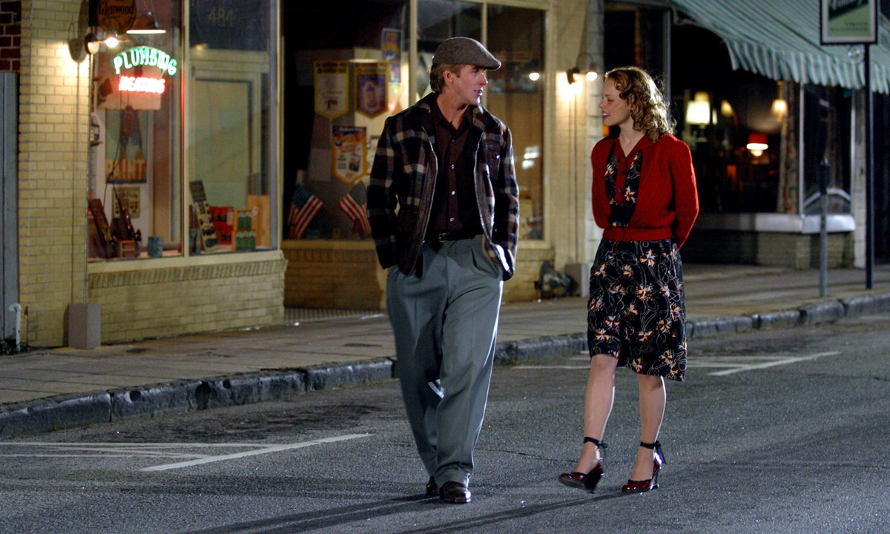

Starac u staračkom domu svakodnevno čita priču starici. Priča prati dvoje mladih ljubavnika po imenu Allie Hamilton (Rachel McAdams) i Noah Calhoun (Ryan Gosling). Upoznali su se jedne večeri na karnevalu prije mnogo godina, Allieini roditelji ih razdvajaju jer ne odobravaju Noin nedostatak bogatstva. Nakon što je nekoliko godina čekala da joj Noah napiše, Allie upoznaje i zaručuje se za lijepog mladog vojnika po imenu Lon. U lokalnim novinama Noina slika upada u oči Allie. Stoji pred potpuno obnovljenim, 200 godina starim domom. Članak je ispunjen pohvalama za njegova postignuća. Allieino srce gotovo pukne. Posljednji put kad je vidjela ovu kuću bila je trula raspadnuta ruševina. Stajala je zagrljena Noahim rukama u velikom ulazu i slušala njegove planove za kupnju i obnovu ove kuće. Baš onako kako je ona to željela. S njezinom ljubavlju prema Noi koja je još uvijek živa, slika privlači njezino srce. Mora se vratiti, vidjeti je li Noah dobro i reći mu o svom braku. Oboje misle da odjek duboko u njihovim srcima, onaj koji traje sve ove godine, ne dijeli drugi. Vapaj koji nisu mogli ugušiti.